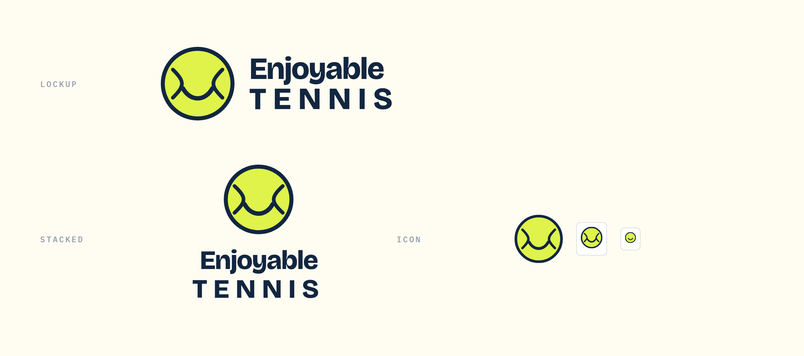
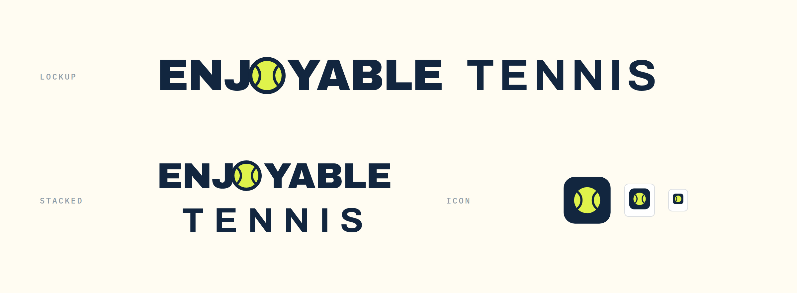
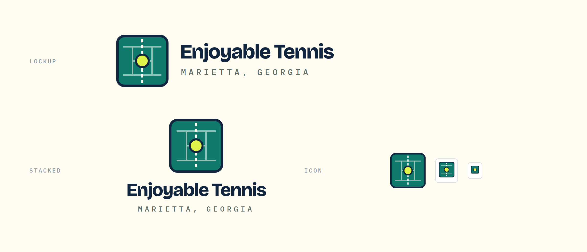
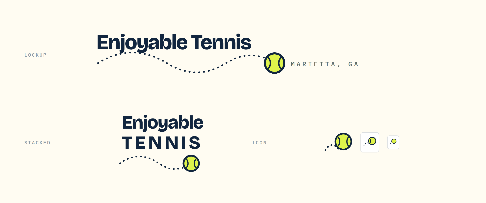
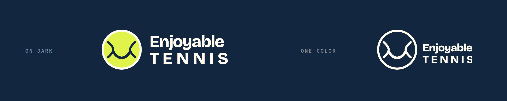

Every one is drawn as vector, works in one color, and is shown at real favicon sizes so you can see what survives at 16 pixels. That is the test most logos fail.
The ball's own seam bent into a smile. The name is the mark. Enjoyable is the promise, and the seam does the work without a single extra element. Holds all the way down to 16px, where the smile alone still reads.
Downside: friendly enough that a 45-year-old league player might read it as a kids-only brand.

The O in ENJOYABLE is the ball. No separate icon to manage, the wordmark carries everything, and it prints clean on a shirt, a bag tag, or a car magnet in two colors.
Downside: needs the full word to work, so the icon has to be a cropped ball in a square, which is the least distinctive of the four.

A court seen from above with the ball on the service line. The most professional of the four, and the one that looks most at home next to a county parks logo or a high school athletics page.
Downside: at 16px the court lines vanish and it becomes a green square with a dot.

The bounce path underlines the name and the ball lands on it. Matches the rally already moving down the website, so the logo and the site are the same idea rather than two ideas glued together.
Downside: the dotted path is the weakest element when embroidered or printed small.

Concept A shown reversed on navy and as a single-color outline. A logo that needs its colors is a logo that breaks on a shirt, a fax, a stamp, or a sponsor banner.

Colors here are placeholders from the current site, ball yellow on navy. Say a letter and I will finalize it: outline the type to real vector paths so it needs no font, export SVG, PNG, and a transparent version, cut the favicon set, and drop it into whichever brand direction you pick.